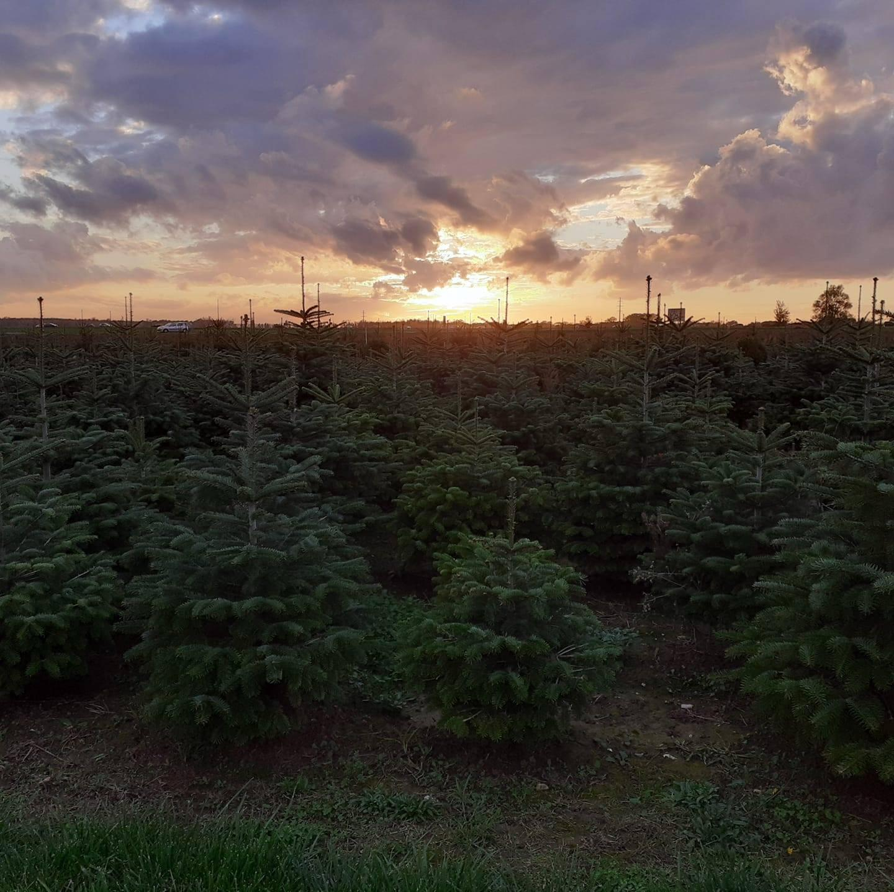
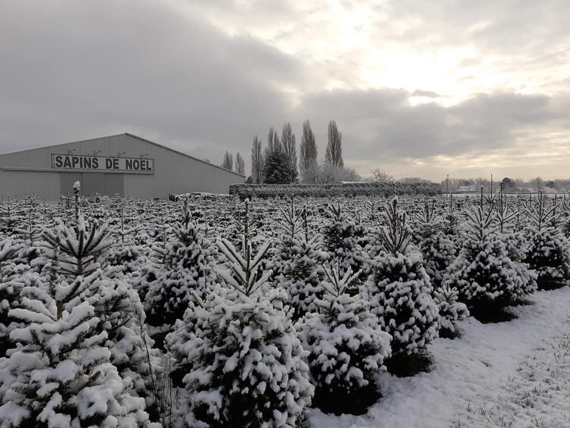
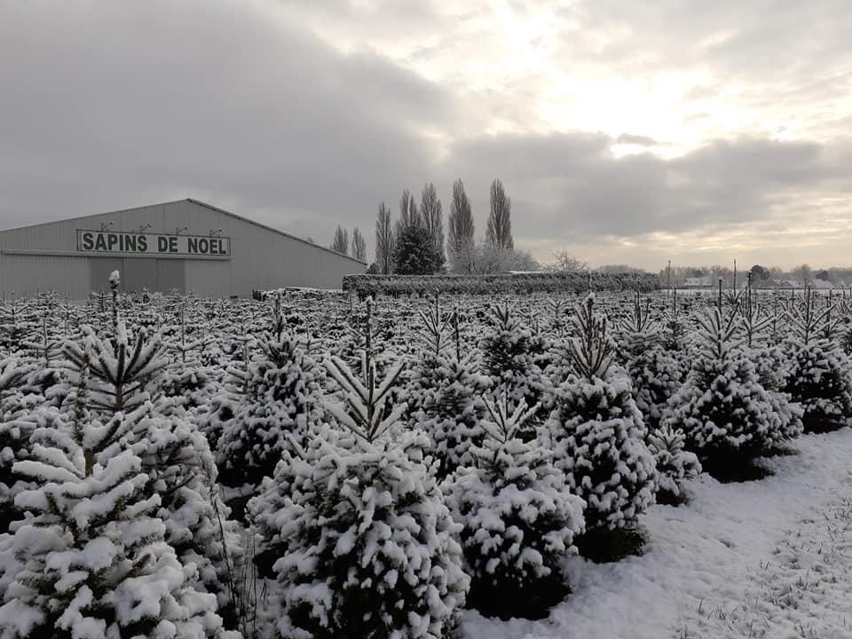

Nos Sapins de Noël
À la Ferme de la Garenne, nous cultivons avec soin deux variétés emblématiques de sapins de Noël : le Nordmann et l’Épicéa. Découvrez leurs caractéristiques pour choisir celui qui conviendra le mieux à votre maison et à votre ambiance de fêtes.
Sapin Nordmann : L'élégance durable
Le Nordmann est apprécié pour :
- Ses aiguilles douces et non piquantes, idéales pour les familles avec enfants.
- Sa tenue exceptionnelle : il conserve ses aiguilles longtemps, même dans une atmosphère sèche.
- Son apparence : une forme dense et régulière, parfaite pour une décoration somptueuse. 
Sapin Épicéa : La tradition parfumée
Avec son parfum intense de résine, l'Épicéa incarne l'esprit de Noël par excellence :
- Son odeur boisée et envoûtante : un atout unique qui embaume votre intérieur.
- Son esthétique classique : une silhouette fine et élégante qui rappelle les sapins d'antan.
 
